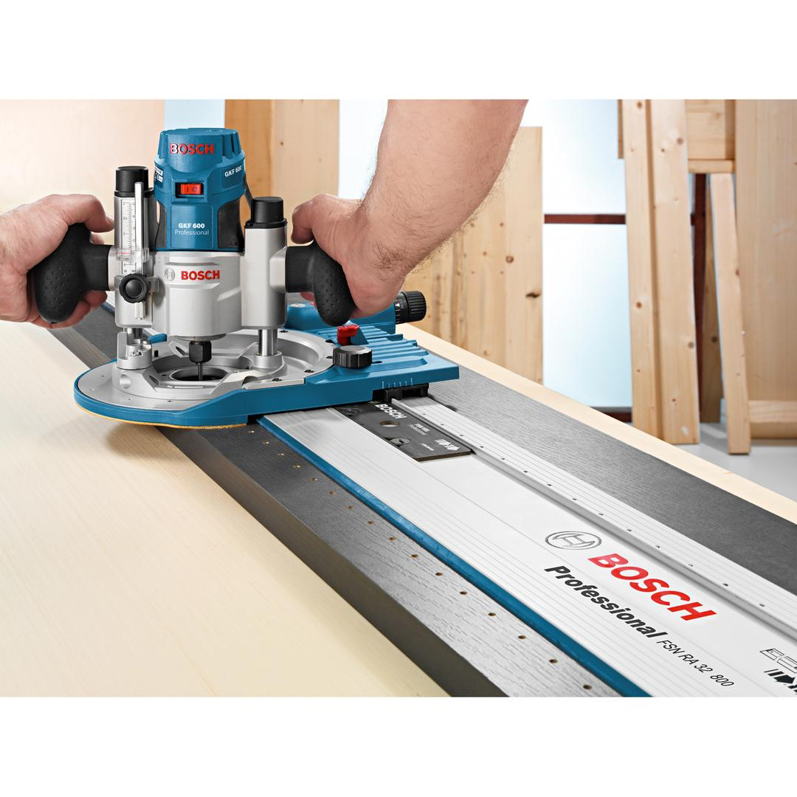
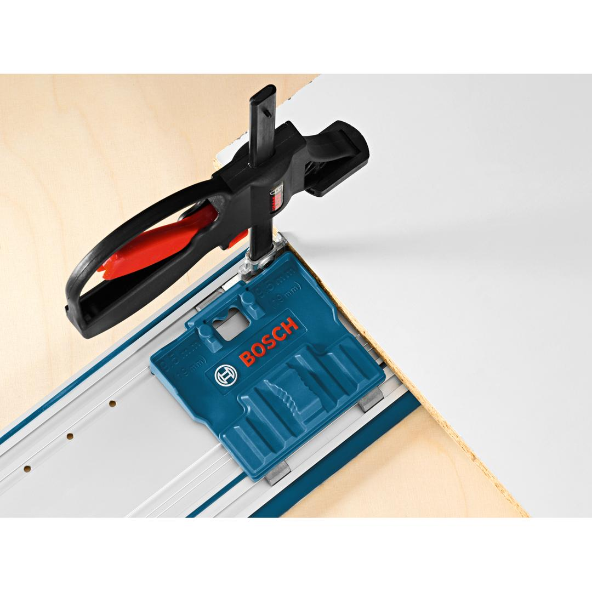
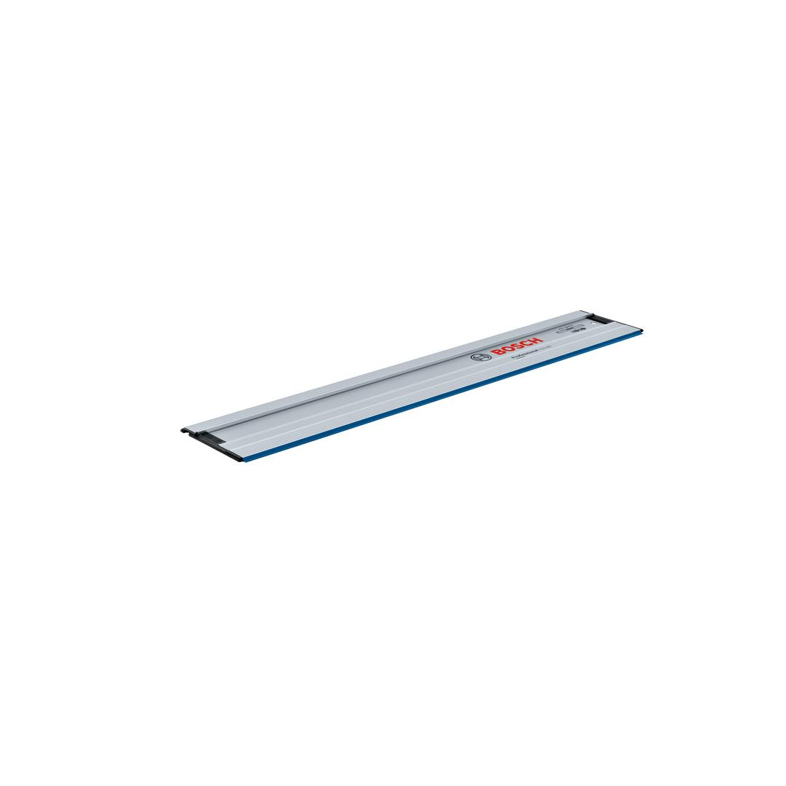
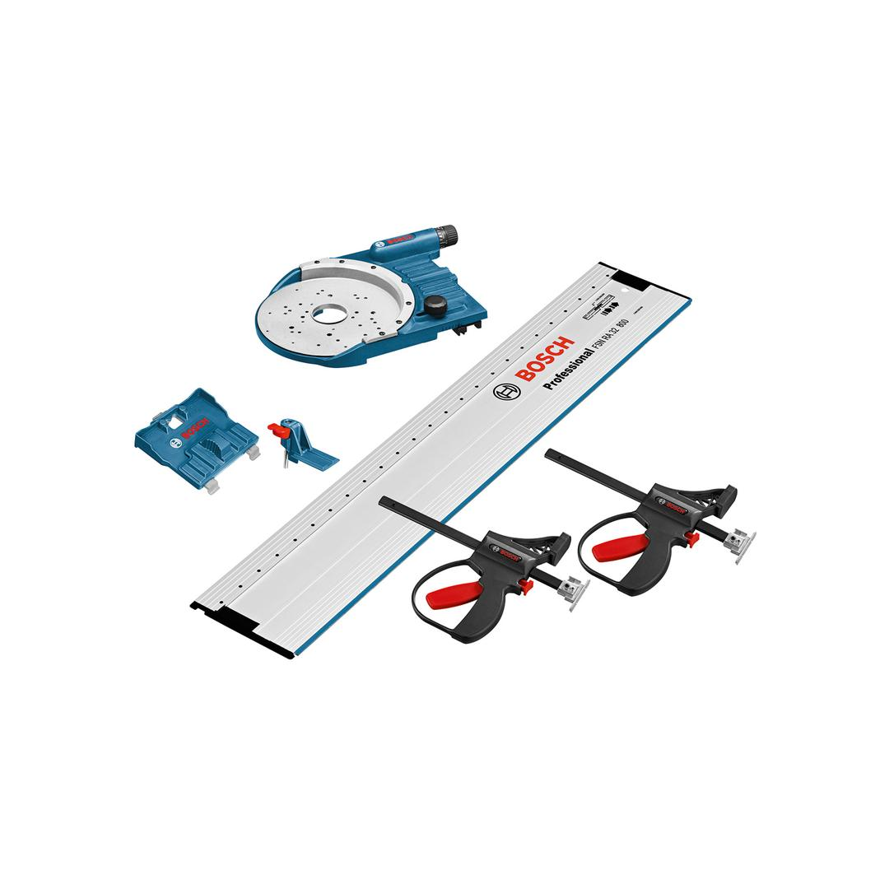

1600A001T8




| Tools included in Kit (SKU) |
1600a001f8 1600z0003x 1600z0000g 1600z0003v |
The complete router guiderail system for uncompromising furniture manufacturing
The FSN OFA 32 KIT 800 Professional router guiderail system delivers the complete router guiderail package for uncompromising furniture manufacturing. Its diverse routing options and cutting applications make it multifunctional. Delivering precise guidance, the set's guiderails are constructed with high-quality workmanship and are a perfect fit with many different components. Additionally, it offers extensive functionality in addition to its standard feature set due to its 32-mm hole spacing layout. This guiderail set is intended for guided cuts and routing in 32-mm hole system applications. It is compatible with various Bosch routers and routers from other manufacturers.
The FSN OFA 32 KIT 800 Professional router guiderail set also includes FSN RA 32 800 Professional guiderail with a length of 800 mm.